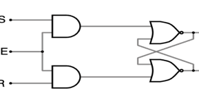
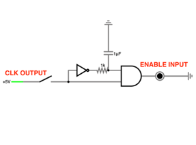
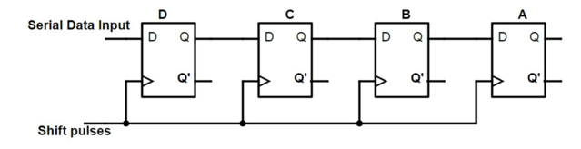
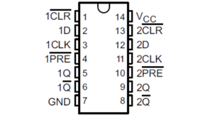
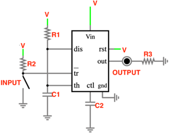

2023 · Memory + Sequential Logic
Multi-Bit Memory Register
Built an 8-bit shift register memory system using D flip-flops and a debounced clock input. The circuit stores and shifts binary data across LED outputs, showing how memory can be built from sequential logic.

Video Demonstration
Working demonstration
The project video shows the physical build, behaviour, and final result.
 ▶ Watch on YouTube
▶ Watch on YouTube
Project Overview
Store and shift binary data through hardware memory cells.
The difficult part was preventing button bounce and ensuring data shifted one bit at a time rather than changing all outputs together.
What I built
- 8-bit memory register using D flip-flop ICs
- 555-based debounced shift pulse
- Reset and data input controls
- Deconstructed 4-bit register exploration
Technical Skills
Skills demonstrated
Sequential memory
Applied directly in the design, build, debugging, or final integration of the project.
Flip-flop timing
Applied directly in the design, build, debugging, or final integration of the project.
Debouncing
Applied directly in the design, build, debugging, or final integration of the project.
Edge-trigger design
Applied directly in the design, build, debugging, or final integration of the project.
Troubleshooting
Applied directly in the design, build, debugging, or final integration of the project.
Build Story
Latch theory, edge triggering, and register hardware
Edge trigger circuit
The image to the right shows the gated D latch reference, which improves the SR latch by using one data input and its inverted complement.
Deconstructed register
The image to the right shows the edge-trigger circuit, which converts a changing input into a brief enable pulse so the register shifts cleanly.

Clean clocking
The image to the right shows the multi-bit register diagram, where each clock pulse shifts stored data from one flip-flop stage to the next.

D flip-flop hardware
The image to the right shows the D flip-flop pinout used to wire the storage chips in the 8-bit register.

Debounced input
The image to the right shows the 555 monostable debounce circuit used to turn a button press into a controlled shift pulse.
